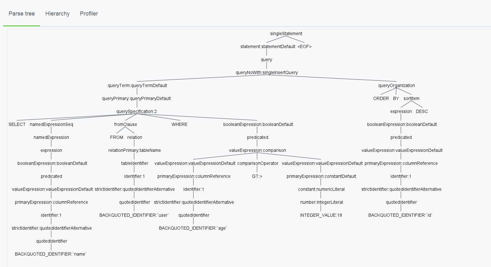
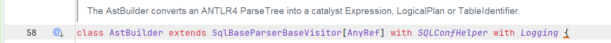
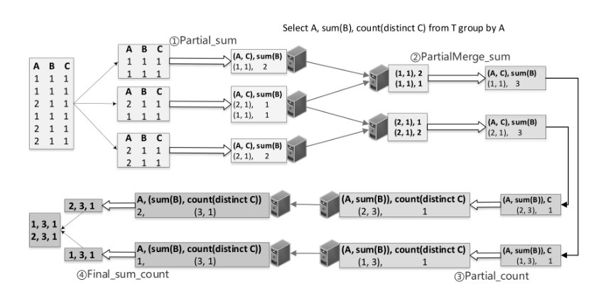
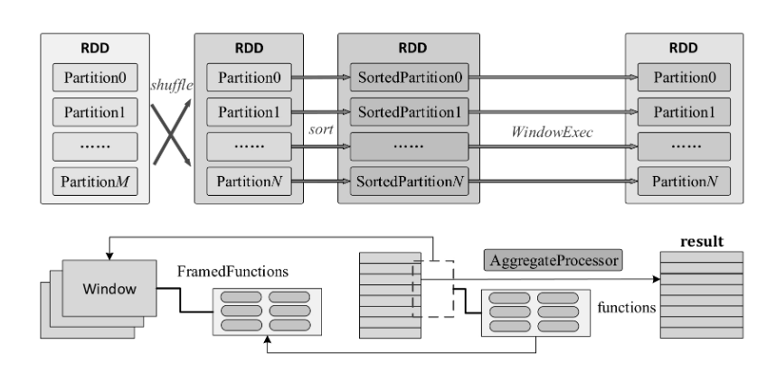

大数据SQL剖析¶
编译本质¶
ANTLR与编译¶
通常意义上的SQL，算是一种DSL，也就是特定领域语言，其在完备性上与通用语言，如Java,Scala
等存在差距，但是擅长特定领域的工作。
它的构建与通用语言类似，分下面两部：
- 设计语法，以及语义，定义DSL中具体元素
- 实现词法分析器
Lexer以及语法分析器Parser，完成对DSL的解析，最后执行
而ANTLR，一种语法分析工具，就是用于生成Lexer,Parser，以及基于监听器以及访问者模式的树遍历器。
核心概念¶
token
以读书为例子，通常，我们并不是一个字符一个字符的读一句话，而是通过先将字符聚合为单词粒度，然后获取每个单词的意思从而理解整个句子。
将字符聚集为符号粒度(token：词法符号)的过程，称为词法分析，其通过词法分析器lexer来实现，它可以将token归类，比如Int,Double，val等。
一个token包含：token对应的文本与其对应的类型(ID)，其实一个type就是一个整数，而对应的文本就是一组字符。
比如在一个大数据引擎的SqlBase.g4文件中，通过ANTLR生成的.tokens文件中，JOIN=48，就是如此，一般tokens文件也就是几百个这样的等式组成。
lexer
词法分析器，将语言文本汇聚为一个个的token
parser
根据.g4语法文件，消费解析出的token流，将其转换为一个语法分析树(parse tree)。这个树的根节点永远是输入的token，从而表达出这个词组的含义。
parse tree的子树根节点是语法规则，而叶子结点是token
要注意，整个的过程，是一个lazy的过程，也就是如果不被消费，则不会有token生成。
listener & visitor
这个是两种访问语法树的方式。
访问者模式,是一种将算法与对象结构分离的模式。对象结构中的每个对象，可以以不同的方式进行处理。遍历的整个对象结构，每个位置的对象通过调用accept方法，将visitor包含进来，然后再在内部通过visitor::visit方法进行不同逻辑的处理。
SparkSQL Parser¶
DonnyZone/ANTLR4-SqlBase: 剥离的模块，用于查看Spark SQL生成的语法树 (github.com)
通过剥离开的sparksql的g4文件，我们可以通过ANTLR生成lexer,parser,listener,visitor等类文件，并且可以直接使用。
Demo
将文本转化为tokens流
| Java | |
|---|---|
1 2 3 4 5 6 7 8 9 10 | |
上述的测试代码的整个流程：
- 用户输入SQL文本
- 使用
lexer，将其转换为token stream - 强迫将
token加载，因为默认是懒加载就看不到了。 - 打印输出，结果如下
| Text Only | |
|---|---|
1 2 3 4 5 6 7 8 9 10 11 12 13 14 15 16 17 18 19 20 21 22 | |
可以推测出，空格是241。该结果完美符合.tokens文件。
使用访问者模式访问parse tree，根据具体框架，有具体的visitor实现类，从而得到想要的东西。
| Java | |
|---|---|
1 2 3 4 5 6 7 8 | |
使用idea插件可以看到整个parser tree

对应到SparkSQL中，其中的ASTBuilder就是一个visitor,其会根据parse tree，生成未解析的logic plan（未绑定具体数据的plan），也就是逻辑算子树。
然后，使用Analyzer对每个节点绑定数据信息，生成analyzed tree
sparksql的AST就有logic plan这种形式，然后进行逻辑优化，以及物理优化。

关于AST tree与Parse tree的区别，前者是后者的浓缩，详见下文：
HiveSQL概述¶
逻辑同上，这里执行到Hive自己的AST树表达形式。
同样需要执行analyze的部分，将AST tree转换为绑定数据信息的一个logic plan（operator tree），称为逻辑算子树，之后进行逻辑优化，以及物理优化。
SparkSQL概述¶
我写的解读很大一部分知识来源于上述这本书，这里我并不会再去大篇幅的摘抄，而是精简概述所需要的部分。
Catalog就是集群环境中的各种函数，以及元数据信息(库，表，分区，视图等)的统一抽象。具体包括了:
- 全局临时视图管理
- 函数资源加载器(UDF,以及Hive Func，通过jar包提供，所以需要加载)
- 函数注册接口
- 外部存储的
Catalog，比如Hive Catalog，或者基于内存的InMemory Catalog
unresovled logic plan得到之后，需要进行具体的数据信息绑定，这里是通过SparkSQL中全局维护的Catalog来实现的，数据信息也只有从那里可以拿到。
这里着重描述Analyze的逻辑，因为具体的优化以及物理计划Hive与Spark并不同，后续优化分析的时候还会展开。
Analyzer基于内置的6类规则来对AST节点进行6种处理逻辑：
- 替换操作
- 具体算子的解析
- 对UDF进行处理
- null值处理
- 删除无用别名
- PullOutNondeterm inistic：// todo没看懂这个
用户可以规定迭代次数，不断使用Analyzer对plan进行转换。在Spark3.3.3中，迭代次数默认100。
然后后续就是最核心的optimizer，这里是RBO，也就是rule based optimize，SparkSQL与hiveSQL都内置了一系列规则，同样用于对树节点进行转换。
然后就是物理计划，这里的话一般会进行CBO，也就是cost based optimize，其分为两个部分，分别是信息统计，以及代价模型。最后进过评估，选择最优的路径进行执行。
RBO与CBO¶
RBO¶
RBO通常基于一组固定的规则，用于对logical plan进行转换。
在SparkSQL中，这些规则被封装为一个个的batch，在Optimizer类中可以具体查看。
一些常见的谓词下推，列裁剪，简单等价重写均在RBO。
总结一下，RBO有如下几种方式：
- 常量：比如常量传递。
- 表达式：比如bool,if else,谓词下推
- 结构，比如列裁剪
这里的谓词下推，分为从构建表和流式表两者来看。一般在构建过程中就判断是否能够进行谓词下推，也就是此时where,on都可以作用于构建表，进行下推，但是on不能作用于流表。
CBO¶
基于成本的优化器 - Azure Databricks | Microsoft Learn
大数据SQL在这里的处理依旧很初期，集中于一组Join排序的优化。而关系型数据库在此处发展完备。
这里因为RBO没办法拿实际数据量信息，所以需要在此阶段进行信息统计，并应用于代价模型来选取最佳计划。
为了防止统计信息过期，可以手动收集信息，就是使用:
| SQL | |
|---|---|
1 2 3 4 | |
如果环境更为复杂，还可以动态采样，比如使用Sample算子，但这是同步阻塞的操作，所以要严格控制。
可以评估一些指标，比如：
- 网络IO +磁盘IO：一字节从HDFS读过来的时间，表有多少字节。
- CPU：一个最小操作的
CPU消耗时间
然后通过计算公式，将其应用在每个树节点，最后相加则为某个计划的cost。
从中选取cost最小的plan即可。
聚合¶
aggregate¶
这里执行的是不包含窗口的聚合。
聚合模式¶
SparkSQL中，聚合一共有4种模式
Partial + Final
其中partial是局部聚合，通常在map阶段。将输入转换为中间聚合的结果。
而final是最终聚合，通常在reduce阶段。将中间结果汇聚，并进行再次聚合。
通常一些优化思路中，开启预先聚合，就是使用的这种模式。
比如SQL语句如下:
| SQL | |
|---|---|
1 | |
则在上游stage的每个task中，会先将数据进行预先聚合，也就是partial聚合模式。经过shuffle之后，在下游stage，每个task会进行final聚合模式。核心就是减少shuffle IO带来的影响。
Complete
就是直接将数据拉到reducer阶段进行聚合，通常用在不支持局部聚合的聚合函数中。
| SQL | |
|---|---|
1 | |
同样的SQL，则数据行不会在上游Stage的task中进行预聚合，而是Shuffle完毕，在下游Stage的task中进行聚合。
PartialMerge
这种操作主要用在distinct操作中，用于对中间的结果缓冲区合并，但仍不是最终结果。
这里注意，Spark在默认情况下，就对distinct进行了优化，底层实现其实就是多阶段聚合。 像Hive on MR，它执行count(distinct)就只会将所有数据拉取到一个Reduce Task中进行去重聚合，非常低效。通常需要手动进行多阶段聚合。
distinct一般又会被分为单distinct和多distinct两种。这里只看单distinct。
比如语句
| SQL | |
|---|---|
1 2 | |
执行链路一般如下： Partial -> PartialMerge -> Partial -> Final
首先，对于只有单个count(distinct a), 没有其他聚合函数来说，步骤如下：
- Partial，也就是按照(A,C)为key，进行局部聚合(其实这里就是去重了，因为没有聚合字段。可以看做通过HashMap进行聚合，但是只保留keys)。
- Shuffle，按照(A,C)为key
- PartialMerge。将Shuffle Read过来的数据再次进行聚合(就是去重)。此时，(A,C)已经被全局去重，等同于A粒度下为C的record唯一。
- Partial，此时A下C的每种，对应一行record，可以将其map为(A,1)。则此时按照A粒度进行聚合，则输出为(A,3)。后者为(A,C)粒度下，C的种类。
- Shuffle，按照A为key
- Final，则按照a为key,聚合之后，则可以知道A粒度下C的种类全局为多少。最终输出结果就可以。
而如果还有其他聚合函数，则语义变为如下：
Partial -> PartialMerge -> Partial -> Final
- (A,C) 聚合，得到局部B值
- shuffle,按照(A,C)为key hash
- (A,C) 聚合 ，则此时得到(A,C)为key的B的全局值。
- merge，按照A为key,将C进行去重计数，而B进行局部聚合。
- shuffle，按照A粒度为hash key
- 此时进行聚合，则得到的是全局每种A下的C的种类，以及按照A为粒度B的总和，也就是SQL结果。
对一张person表，执行
| SQL | |
|---|---|
1 2 3 4 5 6 | |
这时候，同时出现了sum以及count distinct，则会使用到partialMerge模式。
物理执行计划如下所示：
| Text Only | |
|---|---|
1 2 3 4 5 6 7 8 | |
可以看到，对于sum以及count distinct，分别从局部到全局进行处理。首先，注重sum逻辑，然后将分组也就是hash的键做改变，再注重count distinct逻辑，最后全局做一次汇总。

聚合算子¶
有两种模式的聚合算子，分别是SortAggregateExec以及HashAggregateExec.
SortAggregateExec
具体实现，就是对于数据进行按照group id进行分区，之后分区内排序，相同键相邻，然后进行聚合即可。
HashAggregateExec
具体实现相对复杂，大致思路就是在内存中开一个Map(Spark中有特殊的AppendOnlyMap)，然后不断对数据进行聚合或者添加，满了就溢出写入磁盘。溢出的时候需要排序并合并。
window¶
之前跳过了，现在补上。

其与普通group by的如下：
- 行数变化：
group by聚合行数减小，但是开窗函数不变，为每行输出结果 - 功能增加：
group by针对一个分区只能输出一种结果，但是开窗函数可以在分组窗口内做累积等逻辑，输出不同结果。并且支持的聚合函数更多。 - 聚合模式不同：
group by可以partial + final，而window只能complete模型运行，聚合逻辑全局在reducer端。 - 聚合算子不同：
group by可以hash or sort,但是window只能sort，因为窗口默认都有排序要求。
具体来说，步骤如下:
- 对要开窗的表的数据，进行shuffle之后，每个分区内排序(partition by xxx)。
- 对每个排序的分区，不断进行开窗操作。也就是说，不断在这一个缓冲数组(
RowBuffer)上做文章。 - 最终将所有分区的结果拼到一起。
而对每个排序的分区操作，就是窗口函数语义的事情。具体来说，有两个核心点:
- 窗口范围
- 窗口内作用函数
首先是窗口范围(针对的是单个分区)，一共有5种：
- 全局窗口-unbound preceding and unbound following
- 扩张窗口-unbound preceding and xxx，也就是说，窗口随着行的遍历，开始端一直都是第一行，size是单调递增的。
- 收缩窗口-shrink Frame：xxx and unbound following ，也就是说，窗口随着行的遍历，逐渐逼近最后一行，size单调递减。
- 移动窗口- xx preceding and yy following，每次有进有出
- 偏移窗口- 也就是特定偏移量的行，一对一。
如果窗口函数和Group By一起会怎么样？
可以看到，也就是先进行group by ，局部聚合和全局聚合之后，在它的基础上，因为已经分好区了(分区粒度不同的话应该还是会再shuffle)，直接做window操作就可以。
| SQL | |
|---|---|
1 2 3 4 5 6 7 | |
olap¶
上卷与下钻¶
Sparksql中，支持上卷以及下钻，并有特定的语法支持。
grouping sets
| SQL | |
|---|---|
1 2 3 4 5 6 7 8 9 10 11 12 13 | |
效果上等同于将不同粒度的聚合操作通过union拼接在一起。
cube
| SQL | |
|---|---|
1 2 3 4 5 6 7 8 9 10 11 | |
下钻操作
cube(a,b,c) = grouping sets((a,b,c),(a,b),(a,c),(b,c),(a),(b),(c),())
rollup
上卷操作
rollup(a,b,c) = grouping sets((),(a),(a,b),(a,b,c))
null值
执行中的null值，与实际生产中的null值，通过grouping函数处理。其返回的结果如果是1，则代表是grouping的null值。如果是0，则是本身的null值。
底层原理¶
grouping sets实质上是Project + Expand + Aggregate节点组合。
上述的sql的resolved logical plan如下：
| Text Only | |
|---|---|
1 2 3 4 5 6 7 8 | |
经过optimize之后如下：
| Text Only | |
|---|---|
1 2 3 4 | |
其中Project部分就对应着数据源进行选择，以及列裁剪之后的部分。
而Expand部分中的结果，就是添加特殊的分组标签。其对每行数据应用投影操作，输出多行数据。而输出的行数，就是这里额外添加的分组标签。不用的列会将其作为null然后进行操作。里面一个Seq[Seq[Expression]]，具体每种分组策略都展示出来了，ID有0,1,2。
最后的Aggregate就是针对每种组合，也就是score,handsome,[0,1,2]，分别进行聚合操作，最后汇总。
其物理计划如下：
由于count支持局部聚合，所以是partial + final，有预先聚合。
| Text Only | |
|---|---|
1 2 3 4 5 6 | |
连接¶
执行计划¶
执行一个person表和person_info表的join：
| SQL | |
|---|---|
1 2 3 4 5 6 7 8 | |
执行计划如下：
| Text Only | |
|---|---|
1 2 3 4 5 6 7 8 9 10 11 12 13 14 15 16 17 18 19 20 21 22 23 24 25 26 27 28 29 30 31 32 33 34 35 36 37 | |
从逻辑计划看出，依次进行了数据绑定，变为resolved。
然后进行列裁剪，以及push down（谓词下推到靠近数据源）操作，变为优化好的optimized plan。
5种JOIN¶
具体类型¶
- BoardcastHashJoin
- ShuffleHashJoin
- SortMergeJoin
- BoardcastNestedLoopJoin
- CartesionProductJoin
划分依据¶
数据表能否被广播
适用于小小表
通过spark.sql.autoBoardcastJoinThreshold参数设置广播表大小。默认10MB.
BuildSide
也就是左表/右表能否被特殊作用，这里其实是看左右两边哪个是流式表，哪个是构建表。
能否构建HashMap
在单个分区上创建HashMap以用来进行单分区的JOIN，有内存限制，所以需要判断条件。
构建细节¶
- canboardcast &canBuild=> BoardcastHashJoin
- canbuildLocalHashMap & 无排序 & canBuild & muchsmaller=> ShuffleHashJoin
- 要排序 || 非等值Join => sortMergeJoin
- 笛卡尔积 => ca......
- 最后：BoardcastLoopJoin
流式表和构建表
SparkSQL包括其他大数据SQL很多都遵循这样一个原则，就是将A join B的两个表区分开来。
流式表:拿到的是streaming iter，是遍历每条数据
构建表:拿到的是build iter，是根据key找到对应的数据
则如果build table在右侧，就成为这个Join是build right。
各种Join的build规定
BuildRight:left join,left semi join,inner join
BuildLeft：right join, right semi join,inner join
执行机制¶
BroadcastHashJoin
数仓中的表一般分为事实表以及维度表，而对应的就是大表和小小表。
为了避免shuffle，则可以选择由Driver收集并广播小小表(build table)，则大表的分区数据可以在本地进行join.
假设sql如下：
| SQL | |
|---|---|
1 2 3 4 5 6 7 8 9 | |
则物理执行计划如下：
| Text Only | |
|---|---|
1 2 3 4 5 6 7 8 9 | |
可以看到是将右表广播的，进行了Exchange，然后将两者进行hash join。
ShuffleHashJoin
构建条件比较严苛。需要canBuildHashMap & 有明显数据量差(比值>=3) & 不能被ShuffleSortMergeJoin抢先。
经过考虑，直接加入Hint强制进行ShuffleHashJoin,但是这里buildSide不强制是某个表，让Spark自己选，然后构建HashMap。
这里已经关掉了AQE
| SQL | |
|---|---|
1 2 3 4 5 6 7 8 9 | |
物理执行计划如下：
| Text Only | |
|---|---|
1 2 3 4 5 6 7 8 9 10 | |
可以看到两者都进行了shuffle，然后在每个分区上进行hashjoin。
SortMergeJoin
通常用于大表对大表。
不用将任何表的数据完全加载到内存。首先将两个表的数据进行shuffle，然后在分区内进行排序。此时两个表的对应位置均已排好序。则进行归并排序并join结果即可。
参数调优¶
这里主要暂时记载没有默认开启或者特殊化的优化手段。
常规的加资源，加并行度以及一些默认开启的优化手段就不记载了。
Hint¶
统一语法如下：
| SQL | |
|---|---|
1 | |
partition¶
| SQL | |
|---|---|
1 2 3 4 5 6 7 8 9 10 11 12 13 14 15 16 17 18 19 20 21 22 23 24 25 26 27 28 29 30 31 32 33 34 35 36 37 38 39 40 41 42 43 44 45 46 47 | |
其中：
REBALANCE 提示可用于重新平衡查询结果输出分区，使每个分区的大小合理（不小也不大）。 它可以将列名作为参数，并尽量按这些列对查询结果进行分区。 这项工作属于尽力而为：如果存在倾斜，Spark 会拆分倾斜的分区，以使这些分区不会太大。 当需要将此查询的结果写入表时，此提示很有用，可避免文件过小/过大。 如果未启用 AQE，则忽略此提示。
join¶
BROADCAST ( table_name )使用广播联接。 无论autoBroadcastJoinThreshold如何，都将广播带有提示的联接端。 如果联接的两端都具有广播提示，则广播较小的一端（根据统计信息确定）。MERGE ( table_name )使用随机排序合并联接(SortMergeJoin)。SHUFFLE_HASH ( table_name )使用随机哈希联接。 如果两端都有随机哈希提示，Databricks SQL 会选择较小的一端作为生成端（根据统计信息确定）。SHUFFLE_REPLICATE_NL ( table_name )使用随机复制嵌套循环联接。
这些Hint可以一次写多个，但是SparkSQL会选择优先级高的:
BroadcastJoin > sortMergeJoin > ShuffleHashJoin > NLJoin。
| SQL | |
|---|---|
1 2 3 4 5 6 7 8 9 10 11 12 13 14 15 16 17 18 19 20 21 22 23 24 25 26 | |
skew¶
AQE¶
原理¶
AQE是在查询执行期间发生的查询重新优化。
运行时重新优化的推动因素是SparkSQL在随机和广播交换（在 AQE 中称为查询阶段(相对的是读数据阶段)）结束时具有最新的准确统计信息。 因此，SparkSQL 可以选择更好的物理策略、选择最佳的随机后分区大小和数目，或执行以前需要Hint的优化（例如倾斜联接处理）。
这在未启用统计信息收集功能或统计信息过时的情况下会非常有用。 在静态派生的统计信息不准确的情况下（例如在复杂查询的过程中或在发生数据倾斜之后），也很有用。
功能和范围¶
开启
| SQL | |
|---|---|
1 | |
从Spark3.2开始就默认开启。
功能
- 将
SortMergeJoin -> BroadcastHashJoin - 在随机交换后将分区进行动态联合（将小分区合并为大小合理的分区）。 非常小的任务具有较差的 I/O 吞吐量，并且往往会产生更多计划开销和任务设置开销。 合并小型任务可节省资源并提高群集吞吐量。
- 动态处理
ShuffleSortMergeJoin与ShuffleHashJoin中的倾斜，方法是将倾斜的任务拆分（如果需要，还要进行复制）为大小大致相等的任务。 - 动态检测并传播空关系。
范围
- 非流式处理
- 至少有一个
exchange或者一个subquery
其他¶
自适应查询执行 - Azure Databricks | Microsoft Learn
DDP¶
[SPARK][SQL] 聊一聊Spark 3.0中的DPP特性 - 知乎 (zhihu.com)
SPJ¶
性能调优 - Spark 4.0.0-preview2 Documentation (apache.org)
火山模型与向量化¶
火山模型¶
原理¶
火山模型诞生的时候，人们注重于优化IO的效率。
其将关系代数中的每个操作抽象为Operator，并构建为树。然后从根开始递归调用next，就可以得到输出的tuple。
SparkSQL中的执行计划也体现了这一点。
缺点¶
火山模型一次处理一行，缺点如下：
- 虚函数调用过多，消耗CPU。Java的虚函数与普通函数的调用区别就是其是一个间接调用，会多一次压栈出栈的过程，并且CPU无法预测跳转位置。这样CPU开销是翻倍的。
- 缓存不友好，每次只能拉取一行数据，并且当前算子的缓存可能被下层算子冲掉。
改进¶
问题一
针对虚函数调用过多的问题，SparkSQL采用了代码生成来解决，自动生成代码来执行Operator的逻辑，避免虚函数调用。其将一个stage中的operator全部压缩为单个函数调用，是一个大的for-loop。
SparkSQL中使用如下参数开启和关闭：
| SQL | |
|---|---|
1 | |
问题二
每次处理一行数据，则可以改为SIMD指令并行，一次处理多行数据，并且缓存对齐。已经有开源项目支持该功能。
向量化¶
解决的就是问题二。
kwai/blaze：超快的查询执行引擎使用 Apache Spark 语言，并以 Arrow-DataFusion 为核心。 (github.com)
常见问题¶
Spark¶
Spark and MR¶
Spark已经是事实上的批处理标准引擎了，它比MR来说有如下几点突破：
- 从语义上来说，多个MR任务等价于一个Spark任务。而多个MR任务中的每个任务，结果都要落盘。但是Spark任务的中间缓存机制更加完善，某些task可以缓存中间数据，避免大量的磁盘IO。
- Shuffle，这个是核心。
- 排序可选：对于MR来说，Shuffle write阶段必须按照parition + key排序。但是有些操作符，比如groupByKey，不需要排序。Spark就可以按照partition进行组织(之所以还要按照paritition排序是为了实现SortedBasedShuffle)，或者按照partition + key进行排序，实现更加灵活。
- 在线聚合。MR的聚合，都是数据先统一放入内存/磁盘，再单独启动聚合阶段。而Spark构建特殊结构AppendOnlyMap，利用hashMap的特性，实时更新数据。
-
临时文件数量小。对于MR来说，上游有M个任务，下游有N个任务，那么MR的临时文件数量为M*N，这是因为MR一直使用的都是HashBasedShuffle。而Spark从1.x开始就引入并默认为SortBasedShuffle。
- HashBasedShuffle的数据，全部按照partitionId直接Hash到对应bucket就可以，MR还要求比如按照kety排序。临时文件数量M*N，排序不可选。
- SortedBasedShuffle，可以先尝试为BypassmergeSortShuffleWriter，类似于hashBasedShuffle。最后也可以退化为SortBasedShuffleWriter，它可以按照partitionId/(partitionId + key)进行排序，最终一个task只用输出一个磁盘文件(xxx.data)。并通过.index标识每个ShuffleRead如何从该文件读取数据。则临时文件数量M个，并且排序粒度可选。
- Tungsten & codegen优化:Spark可以做code generation优化，将算子链拍扁生成一个for循环。同时DS和DF都引入堆外内存进行管理，加速执行。
Spark进程类别¶
Spark进程分为如下几种：
- Master节点常驻Master进程
- Worker节点常驻Worker进程
- Executor进程，每个Worker节点可以启动多个ExecutorBackend进程
- Driver进程。官方解释是the process running the main() function of the application and create the SparkContext object。位置不定。一般来说，可以是spark-submit启动的进程，也可以是spark-shell启动的进程，此时是client模式。同时也可以是运行在Yarn的ApplicationMaster中，或者是运行在Kubernetes的一个专属Pod中的进程，此时是cluster模式。甚至也可以是Idea中一个JVM运行main()函数 & 执行task，则此时Driver和Executor都运行在Idea一个JVM进程中。
Spark内存模型¶
Spark采用统一内存管理模型(针对所有Executor进程，也就是spark.executor.memory以及spark.memory.offHeapSize进行的管理)。
Executor JVM进程管理如下：
- 框架内存空间(堆外 + 堆内，共计占60%)：框架执行空间，用于存储Shuffle过程的中间结果。而数据缓存空间，用于存储RDD的缓存数据/广播数据，task中间结果等。这两种默认一半一半。框架执行空间可以直接获取数据缓存空间而不同释放(其实是难以实现释放)，而数据缓存空间占用框架执行空间，必须释放(因为释放比较简单)。
- 用户代码空间(堆外 + 堆内,共计占)：用于存储用户代码生成的对象。
- 系统保留空间(堆内)：用于存储Spark运行时产生的临时对象。
聚合、开窗、连接的实现¶
一般来说有如下类别：
- 聚合
- 开窗
- 连接
这个上面都详细解释了。
SQL调优¶
第一步，定位问题，是内部因素还是外部需求问题。
第二步，决定修改方式。确定是不修改SQL调优还是修改SQL调优。
第三步
- 如果是不修改SQL调优，则可以从参数配置，存储结构调整开始。
- 如果是修改SQL调优，则可以进行等价该写，或者说直接根据业务理解改变逻辑。
对于不修改SQL来说：
- 配置修改：比如开启预聚合，加入Hint，小文件合并，分区分桶(分区是目录级划分，把一个日期作为一个目录，方便搜索。而分桶是文件级别划分，比如划分为000x.paruet等，通常用于优化JOIN等)。
- 存储调整：比如把数据存储成列式存储，比如Parquet。修改压缩方式(需要测试，还需要看是否支持划分，LZO，zstd，lz4均支持划分)。